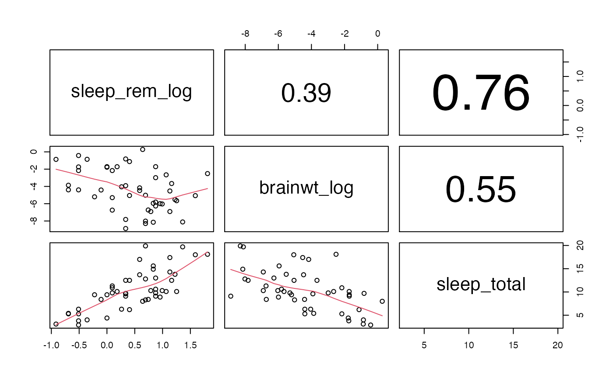
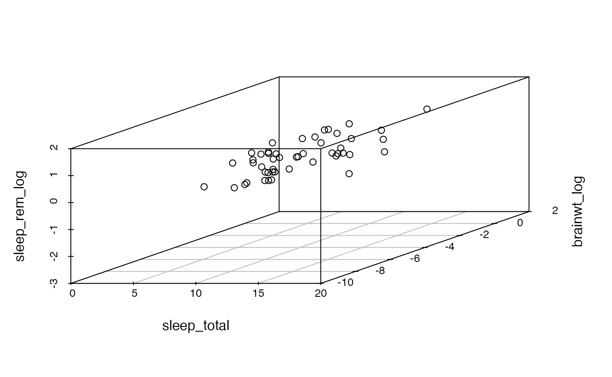
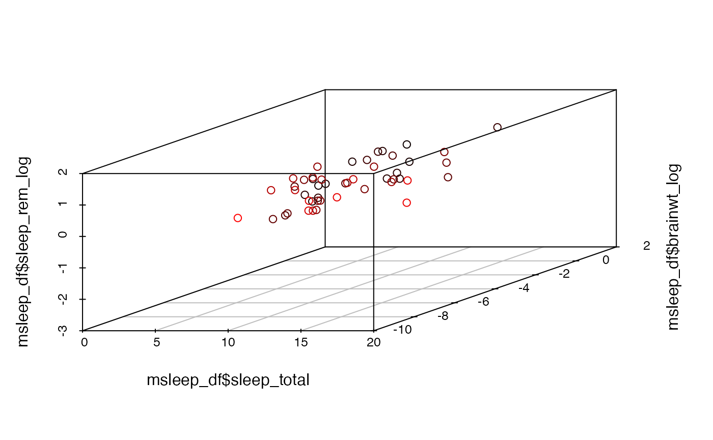
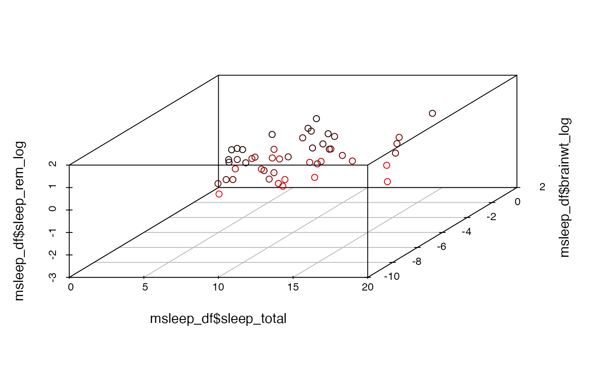
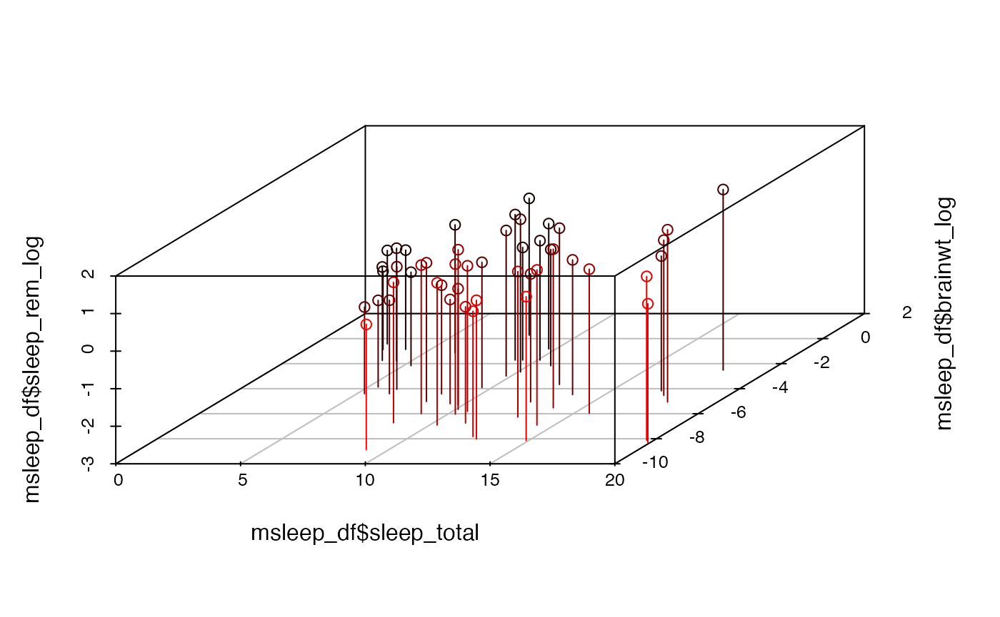
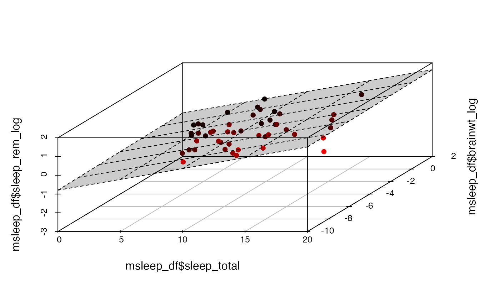

multivar_data-allomtery_3_scp_scatterplot3d.Rmd
library(compbio4all)Only do this once, then comment out the code. You may have already downloaded ggplot2 if you have done the other code checkpoint.
#scatterplot3d
#install.packages("scatterplot3d")
#ggplot2 (if needed)
#install.packages("ggplot2")
data("msleep")The syntax for scatterplot3d is kind of clunky. I usally have to use some trial and error. I will provide you code when you need to use it.
Taking the natural log of data is often used to re-scale it or make relationships linear. Allometric data is often plotted on a log-log scale: both the x and the y variables are logged.
To do this, we’ll make new columns. Let’s take the log of brain weight (brainwt) and body weight (bodywt)
First, brain weight. We can make a new column using the $ operator. This operator can be used to select a single column, like this
mean(msleep$brainwt, na.rm = T)
#> [1] 0.2815814It can also be used to create a new variable in a dataframe; here, I make a new column “brainwt_log” that does not yet exist in the msleep dataframe.
msleep$brainwt_log <- log(msleep$brainwt)The same thing for sleep_rem_log
msleep$sleep_rem_log <- log(msleep$sleep_rem)Did I mention that the synatx is clunky?
We’ll look at 3 variables.
First, a function we’ll use
panel.cor <- function(x, y, digits = 2, prefix = "", cex.cor, ...)
{
usr <- par("usr"); on.exit(par(usr))
par(usr = c(0, 1, 0, 1))
r <- abs(cor(x, y))
txt <- format(c(r, 0.123456789), digits = digits)[1]
txt <- paste0(prefix, txt)
if(missing(cex.cor)) cex.cor <- 0.8/strwidth(txt)
text(0.5, 0.5, txt, cex = cex.cor * r)
}First a scatterplot matix. I will give you this code whenever needed; you should be abile to interpret it (Note: This code is more complex than usual because of NA values in the data; again, I’ll give you the code as needed, you just need to interpret the output)
Also note that the absolute value of the correlation coefficients are being shown; negative correlations are not being indicated (both of the 0.59 values should be -0.59 to indicate the direction of the correlation)
plot(~sleep_rem_log+brainwt_log+sleep_total,
data = na.omit(msleep[, c("sleep_rem_log","brainwt_log","sleep_total")]),
panel = panel.smooth,
upper.panel =panel.cor )
For an obscure reason, I need to turn the msleep object into a dataframe.
is(msleep)
#> [1] "tbl_df" "tbl" "data.frame" "list" "oldClass"
#> [6] "vector"
msleep_df <- data.frame(msleep)Now the actual 3D plot
The variables are in the order x, y, z.
scatterplot3d(msleep_df[, c("sleep_total","brainwt_log","sleep_rem_log")])
Color coding can be added to highlight the values of the z axis.
scatterplot3d(x = msleep_df$sleep_total,
y = msleep_df$brainwt_log,
z = msleep_df$sleep_rem_log,,
highlight.3d = TRUE)
The angle can be varied to change the view. It can be hard to figure out what works best.
scatterplot3d(x = msleep_df$sleep_total,
y = msleep_df$brainwt_log,
z = msleep_df$sleep_rem_log,
angle = 60,
highlight.3d = TRUE)
A useful feature is to drop a line from each point done to the x-y plane to help visualize the z axis. (This is NOT a residual).
scatterplot3d(x = msleep_df$sleep_total,
y = msleep_df$brainwt_log,
z = msleep_df$sleep_rem_log,
highlight.3d = TRUE,
angle = 60,
type="h")
The function lm() is used to fit lines to data (or planes). You need to know that it does this, but I will write any code that is needed.
# Create line of best fit using lm()
plane<-lm(sleep_rem_log ~ sleep_total + brainwt_log, data = msleep_df)
# Do some calculations to calcualte a "plane of best fit"
## using the predit() function
# predict(plane)
# draw 3D scatter plot
s3d <- scatterplot3d(x = msleep_df$sleep_total,
y = msleep_df$brainwt_log,
z = msleep_df$sleep_rem_log,
pch = 16,
angle = 60,
highlight.3d = TRUE,
)
s3d$plane3d(plane,draw_polygon = TRUE)
For more information of scatterplot3D
Conceptually, you can kind of think that PCA is making a 3D plot (if you gave it just 3 variables), figuring out an angle where the data is spread out the most, then flattening the data back down to 2D. The following codee kind of evokes this. Don’t worry about what the code is doing.
Some preparation
dat_predicted <- data.frame(sleep_total = plane$model$sleep_total,
brainwt_log = plane$model$brainwt_log,
sleep_rem_log = predict(plane))Plotted basically as 2d
s3d_alt <- scatterplot3d(x = dat_predicted$sleep_total,
y = dat_predicted$brainwt_log,
z = dat_predicted$sleep_rem_log,
pch = 16,
angle = -1,
scale.y = .01,
)
## add plane
s3d_alt$plane3d(plane,draw_polygon = TRUE)